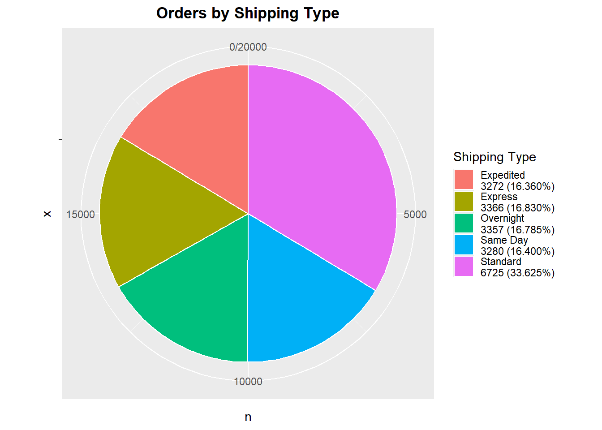
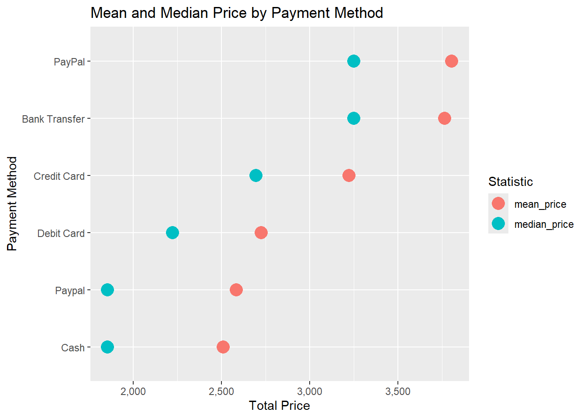
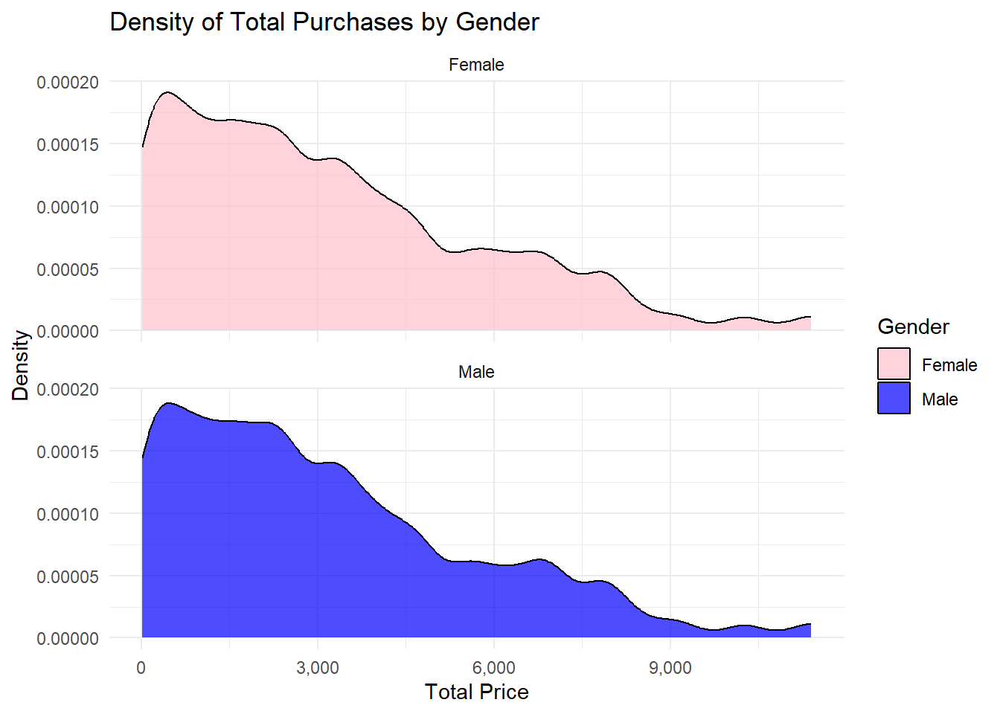
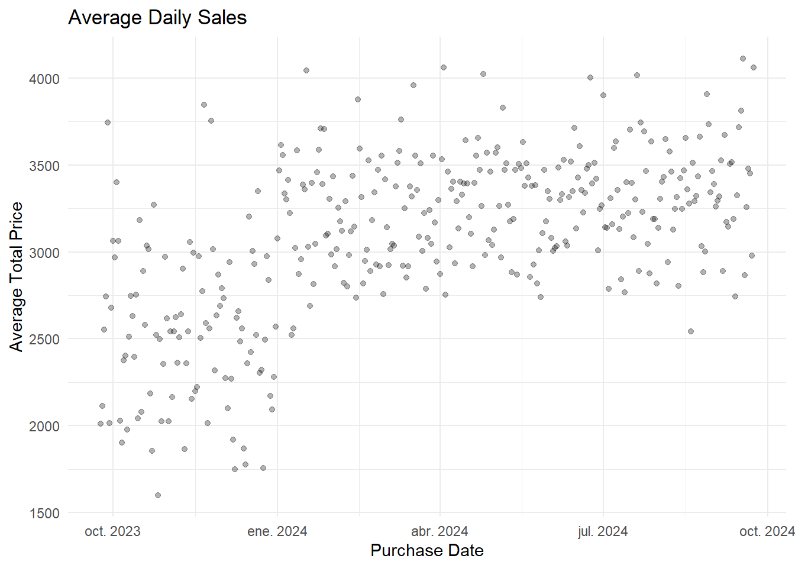
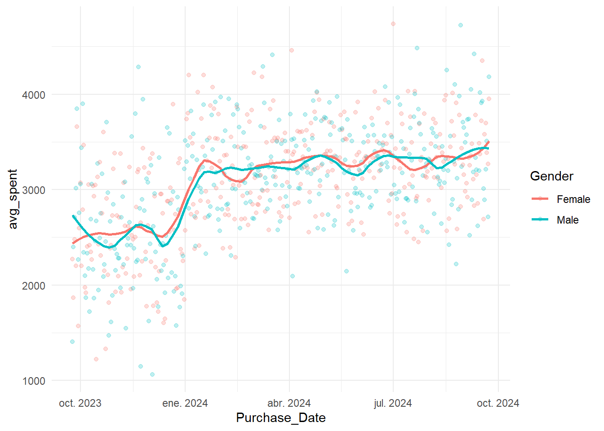
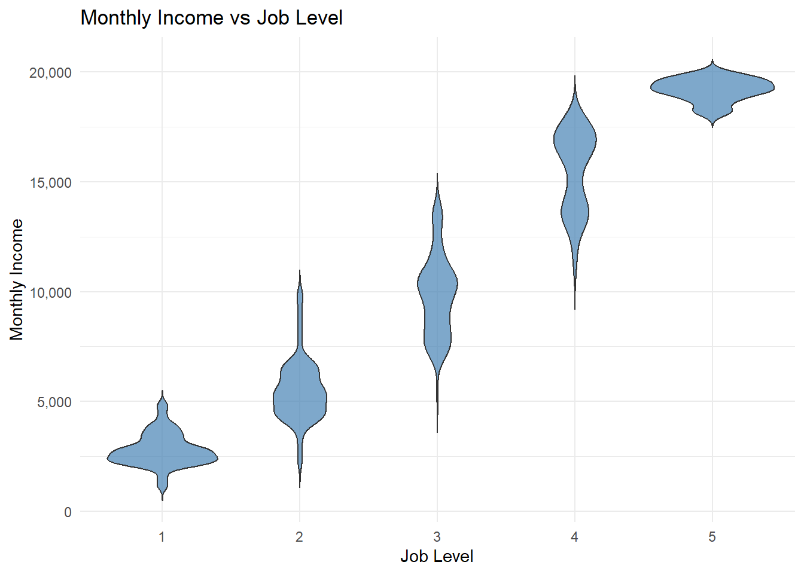
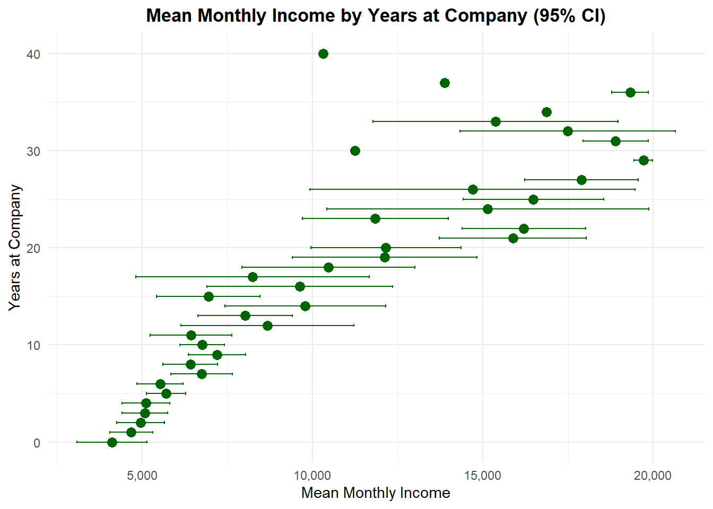
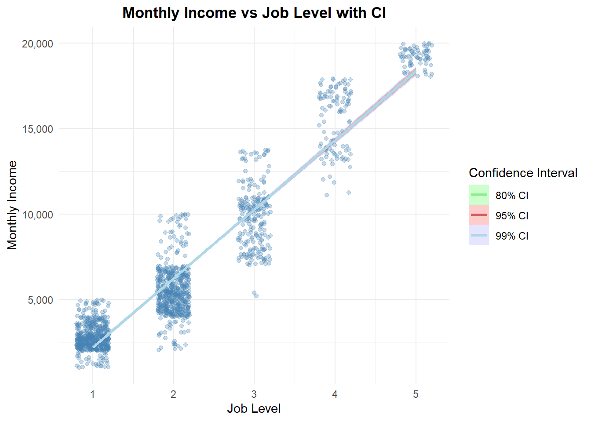

General Analysis of Income
03-02-2026
Chapter 1 Methods
In this project, we want to analyse two dataset. The first dataset we are going to use is related with the sales of a shop from September 2023 until September 2024, and the main idea is to look for the principal income of the shop, from which item we can obtain more money or which is the less bought item . The second dataset is related with the workers of data and HR-department of an industry, we can look for important resources such us Gender, Years at the Company, Job Level and the income of the worker.
1.1 Plotting amounts
We want to see the amount of money earned in the store with the different products offered. With this, although we would still need to analyze the price we pay to have that product in the store, we can consider which product brings us the most money and which one brings us the least. For this we first group the colums Product type and we sum the total price of that product and, after that, we separate it into the different categories for the barplot.

It is also important to know which payment methods generate the most profit for us in order to identify those associated with higher purchase amounts. To do this, we calculated the mean and the median, since the mean can be affected by outliers, while the median is more robust. Thanks to this, we observed that the methods with the highest spending per purchase are PayPal and bank transfer. However, we can also see how outliers affect the mean, as it increases relatively compared to the median by about 250 per sale.

1.2 Proportions
Another important data that we should work with it is the different shipping methods in the store. So we consider that a pie chart is suitable for the case. In the graph we can see that the most used method is the “Standard” with about 33.6% of the shipping. However we can observe that the other faster methods are balanced with about 16% each. This gives us the conclusion that customers prefer the cheapest shipping methods despite that the others are faster than the Standar.

Now we should look for the most sold products (not the ones that gives us the more income) and we can relate with the first graph. As we can observe, the most sold item are smartphones that matches with the first graph. We can also see that tablet, laptop and smart watch are really similar, however the one that produces the second better income are the smart watches while here we can see that the second most sold item are the tablets. Finally the less sold item are the headphones which are also the items with the less income.

1.3 Distributions
Now we will analyse the different purchases by men and women. In this graph we can see that the sales are balanced between them and we can not observe big difference in any product. The smartphone continues to be the most sold item despite of the gender with approximately 3000 sales from each gender. We can observe a little difference in the headphones, where male tends to buy more than female, however female customers tends to buy more smatwatches. 
This density plot represents the total price per purchase by gender. We can see that both graphs are really similar and we can find in both cases an asymmetrical graph to the left. We observe that despite male or female, the highest concentration of sales are for low purchases (between 0 and 2000) with less ones to the right. Looking at this graph we can suggest that gender does not have any significant influence on the total amount spend.

1.4 Trends
This is a graph that shows the average total sales of a day during the year. In the first months (from oct 2023 - january 2024) we can see that sales are a little bit low compared with the rest of the months but the graph tends to increase during the months (steady upward). Maybe this is because seasonal effects or marketing campaigns.
Despite is not the same graph but very similar, we can observe the difference of the average spend in female and male. For this we will work with the mean values. For the first months, we can observe that female tends to spend a more than male. However during the 6 last months it stays equal with a small difference in some days.

1.5 Distributions 2
Thanks to this boxplot we can observe the monthly income related with the years at the company and we can confirm that it is directly related one with each other. We can observe that the mean of each category is higher than the previous one and the graph tends to increase over the years. There are also some outliers in most of the categories but they are not relevant. The last category increase extremely compared with the previous one, with a mean value of about 17000. Also the whiskers becomes larger with the past of the years, this can mean that during the years the workers are more distributed by their salary and Job Level.
This violin diagram shows us that a higher Job Level is directly related to a better income. We can obtain rally useful information in every Leval. For the first one we can see that the violin is narrower and concentrated, indicating that most employees earn monstly the same. In the second level. Job levels 2, 3, and 4 are similar. We observe that they are longer and than the first one and this is because in this levels are more distribution of job roles (categories). Finally we observe that the concentration of the last one is really dense, indicating that the income is very concentrated and there are not too much job roles.

1.6 Visualizing uncertaintly
Now we will use a diagram to see the mean income at the Company during the Years at the company but with an IC of the 95%. Every dot is a mean and the bars are the IC. As in the other one we can observe that during the years the salary tends to increase, however most of the bars (IC) increase too. This means that there are more variability in salaries with the pass of the years and the mean is calculated with less precision. This can be because there are some variation between Job Roles and Job Levels.

We can observe that according to the Job Level the income increase sharply, this means that high Job Level, high salary. Here we find 3 IC (80%, 95% adn 99%). The 80% is the narrowest one while the 99% is the widest one. The narrowest is more certain about the predicted income while the wider one as more variability. A higher concentration of salaries is represented with a higher density of dots. That is why there is less concentration of dots in the last levels.

In conclusion: For the first dataset we can confirm that the most sold item is the smartphone, however we can observe that the smartwatch is a really worthwhile because even though there is no the most sold item (it is the fourth) it provide us the second better income. Also we can confirm that people prefer the standard shipping method because it is cheaper and that the rest of the faster methods are mostly balanced. In the payment method we can observe that Bank transfer is used for big sales while cash is used for the lowest ones. For the second dataset we can confirm that the salary is linearly related with the years at the company, this means that more years more income. Mostly the same happens when we talk about Job Level because it is also linearly realted that we you advanced in your job, you get a better income.